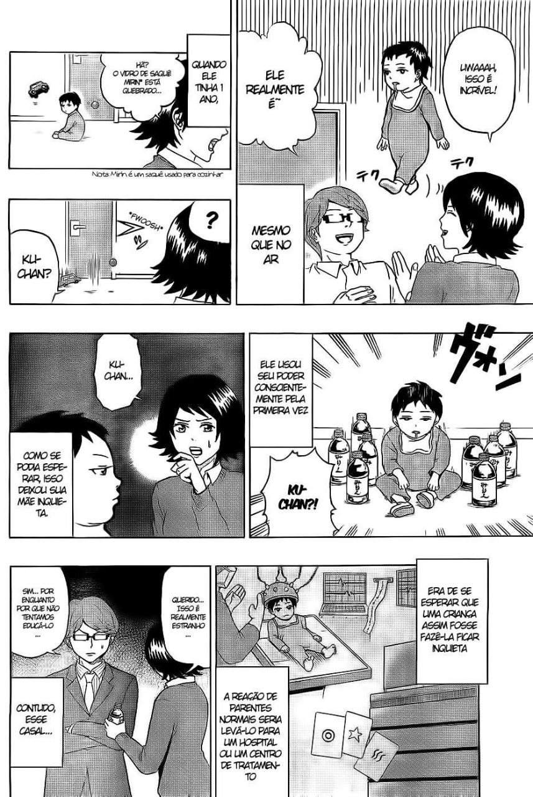

KingK
13/07/22
Comédia
Manga: Saiki Kusuo no Psi-nan
Sinopse: Saiki Kusuo é um adolescente com poderes de telecinese, telepatia, teletransporte, pirocinese, invisibilidade e muito mais. Ele é tão poderoso que usa dois inibidores de poder que ficam como antenas em sua cabeça. Quando ele retira um, seus poderes aumentam absurdamente.
Algumas imagens do manga↓
